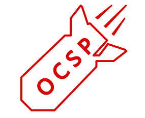

最后更新: 2016年9月22日，18:55:00 星期四 +0800
OpenSSL OCSP 状态请求扩展内存耗尽 (CVE-2016-6304)
概述

OpenSSL OCSP 状态请求扩展存在严重漏洞，该漏洞令恶意客户端能耗尽服务器内存。利用该漏洞，能使默认配置的服务器在每次协议重商时分配一段 OCSP ids 内存， 不断重复协商可令服务器内存无限消耗，即使服务器并未配置 OCSP。理论上，一个 OCSP id 最多 65,535 字节，攻击者可以不断重商令服务器每次内存消耗近 64K。但从实现来说，在 OpenSSL 1.0.2 版本中对 ClientHello 长度做了 16,384 字节的限制，因此每次重商只能令服务器内存消耗约 16K。但在最新的 1.1.0 版本中，对 ClientHello 长度的限制增加到 131,396 字节，那么对使用 1.1.0 版本的服务器，每次重商会令内存消耗近 64K。
对策
从供应商获得软件更新。参考下面链接。
问题
A. 攻击者可通过发送大量 OCSP 状态请求扩展导致服务器拒绝服务。
Q. 如何利用？
A. 攻击者使用 TLS 扩展 "TLSEXT_TYPE_status_request"，填充 OCSP ids 并不断请求重商。
Q. 哪些版本受影响？
A. 影响版本：
- OpenSSL 0.9.8h through 0.9.8v
- OpenSSL 1.0.1 through 1.0.1t
- OpenSSL 1.0.2 through 1.0.1h
- OpenSSL 1.1.0
不受影响：
- OpenSSL 1.0.1u
- OpenSSL 1.0.2i
- OpenSSL 1.1.0a
Q. 有何危害？
A. 攻击者可通过不断重商，发送大量 OCSP 状态请求扩展，导致服务器内存无限增长，最终导致服务器拒绝服务。默认OpenSSL配置的服务器会受影响，即使其并不支持 OCSP，除非在编译时使用了“no-ocsp”编译选项。
Q. 如何避免被攻击？
A. 升级到最新版本。
Q. 漏洞利用影响范围？
A. 我们只测试了小部分使用OpenSSL OCSP功能的组件，包括OpenSSL Server、Nginx、和Apache。其中默认配置的 OpenSSL server 是受影响的(包括:OpenSSL 0.9.8h through 0.9.8v、OpenSSL 1.0.1 through 1.0.1t、OpenSSL 1.0.2 through 1.0.1h、OpenSSL 1.1.0)。 Nginx 0.8.23 以前的版本会受此影响，Apache 2.0以前及 SSLInsecureRenegotiation 配置项为 on 是都会受此影响。
Q. 我需要注销私钥或证书吗？
A. 不需要。攻击者不能窃取到私钥。
Q. 是由于 SSL/TLS 规范缺陷造成的吗？
A. 不是。这是 OpenSSL 实现问题。
Q. 哪些协议版本受影响？
A. 所有版本 (SSL3.0, TLS1.0, TLS1.1, TLS1.2) 都受影响。
Q. 哪些加密算法受影响？
A. 所有加密算法都受影响（此问题与算法无关）。
Q. 如何发现被攻击了？
A. 很难说。也许可以试试看分析崩溃信息。
Q. 你们怎么发现这个漏洞的？
A. 此漏洞由来自360Gear Team的 石磊 (360信息安全部)在阅读 OpenSSL 源码时发现。
Q. 你们是如何处理此漏洞的？
A. 我们发现漏洞后报给了 OpenSSL 官方。
参考
{kind=link}
致谢
- 感谢 CCS Injection 团队的模板。
- 感谢 360信息安全部、NetOPS、Hulk、Qiyun 团队的支持。
修改记录
- 第一版: (2016年9月22日，16:55:00 星期四 +0800)